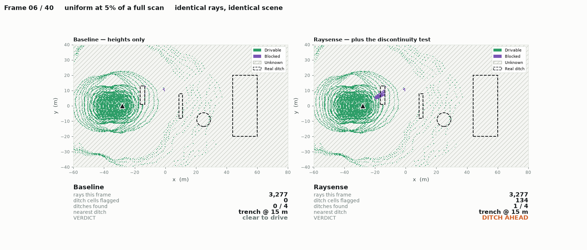

A defence ground vehicle's lidar sees 93% of what sticks up and
15% of what it can fall into.
One geometric test closes that gap — at a twentieth of the point budget.
Ditches, craters and washouts are detected by the absence of laser returns. A narrow trench is not entered by beams — it is stepped over. Measured on 40 full scans, every ray, no budget limit:
Spending more rays cannot fix it. A full scan already spends everything. More data makes the system more confidently wrong: it sees the trench rim, judges it flat, and calls it drivable.
Two adjacent beams that both return land a predictable distance apart on level ground. If the far one lands much further out, the surface between them dropped away.
The comparison must be against what geometry predicts at that range — ground spacing grows quadratically, so a fixed threshold flags flat ground seven times over.
| Scene | Max ratio | Flags |
|---|---|---|
| Flat ground | — | 0 |
| Rolling terrain | 2.48 | 70 |
| 2.4 m × 1.8 m trench | 7.28 | 299 |
The same formula that states the danger finds it. The quadratic falloff is why ditches are missed — and, normalised, it is the detector.
| Budget | Absence test | Ours |
|---|---|---|
| 2% | 6.7% | 82.5% |
| 5% | 9.7% | 96.0% |
| 100% | 15.2% | 100% |
A bump of height h at range r needs angular spacing h/r. A ditch of width w needs w·h/r² — quadratically tighter. A safety floor sized for bumps is comfortably met while ditches stay invisible.
| Range | Needed | OS1-64 has | Met? |
|---|---|---|---|
| 8 m | 1.611° | 0.714° | yes |
| 12 m | 0.714° | 0.714° | the limit |
| 20 m | 0.258° | 0.714° | no |
| 40 m | 0.064° | 0.714° | no |
Python · NumPy · 103 tests · every figure generated from a committed CSV, none typed by hand.

Pittaluga et al., Towards a MEMS-based Adaptive LIDAR, NEC Labs (arXiv 2003.09545) · Adaptive LiDAR Scanning: Harnessing Temporal Cues (arXiv 2508.01562, 2025) · AEye iDAR / 4Sight, US 11675053 / 11782136 / 11860313 · Fast Adaptive Scene Sampling for Single-Photon 3D Lidar
Larson & Trivedi, Lidar Based Off-road Negative Obstacle Detection, DTIC ADA561293 · Negative Obstacle Detection Using Sparse 3D LiDAR, IEEE ROBIO 2024 · RELLIS-3D, ICRA 2021
Team Raysense
Six members · internal hackathon nomination
Repository, findings and reproduction steps available.